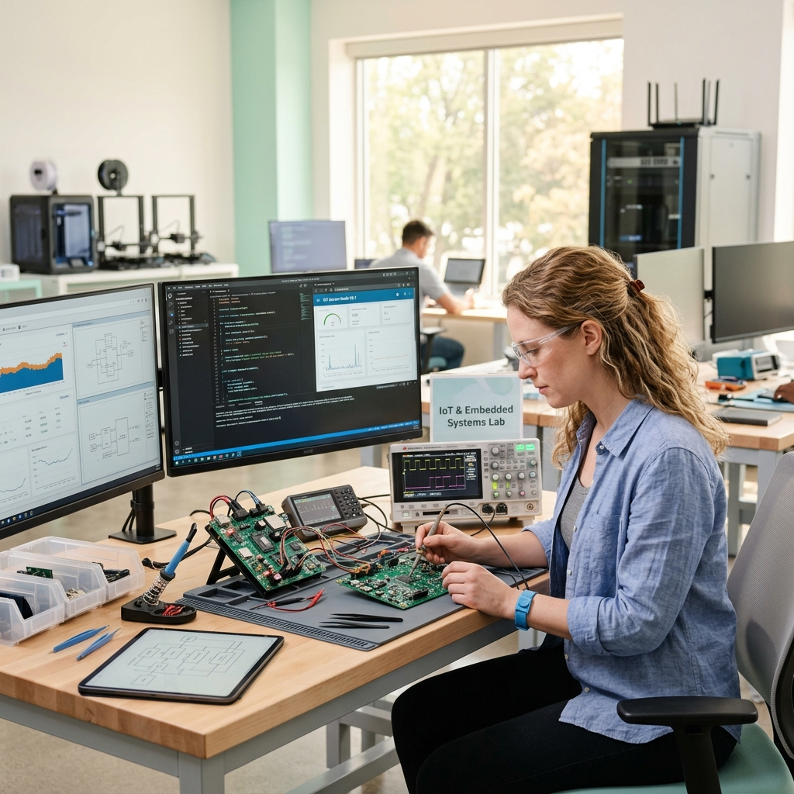

Optimizing embedded architectures, low-power states, and scalable data pipelines for connected hardware enterprises worldwide.

Real-time telemetry stream from our test harness nodes. Displays active register flags, standing current indicators, and runtime FreeRTOS execution logs.
We bridge the gap between heavy physical components and light digital models, ensuring every byte and micro-ampere is utilized efficiently.
Native C/C++ development across ESP32 and STM32 chips using native RTOS frameworks to guarantee deterministic execution, hard-realtime response times, and bulletproof runtime stability.
Micro-ampere standby configuration, advanced deep-sleep routines, and battery management optimization. We design systems that run for years on standard coin-cell or custom LiPo battery setups.
Lean, high-throughput JSON-over-MQTT networks built to relay telemetry instantly without server inflation. Optimized buffer handling, local flash storage, and connection retry systems.
We work deep down inside hardware and software, leveraging open standards and robust libraries to build secure, modular ecosystems that adapt to scaling pressures easily.
Custom dual-core layout optimization, eFuse credential baking, partition customization, and hardware-accelerated crypto APIs.
Custom DMA channel scheduling, bare-metal peripheral drivers (SPI, I2C, UART), sleep clock gating, and power manager tuning.
Preemptive scheduling, task prioritization matrix, custom ring buffers, binary/counting semaphores, and inter-task queue tuning.
Strict zero-heap memory policies, static typing allocation, memory-mapped I/O controls, and optimized algorithmic layouts.
Showcasing an end-to-end IoT system implementing machine learning models alongside localized physical hardware to monitor consumption variables and intelligently predict demand patterns. The system protects pipelines against catastrophic leaks by using real-time edge processing to close control valves in milliseconds.
Have a critical firmware backlog or a structural telemetry pipeline issue? Complete the specifications below.